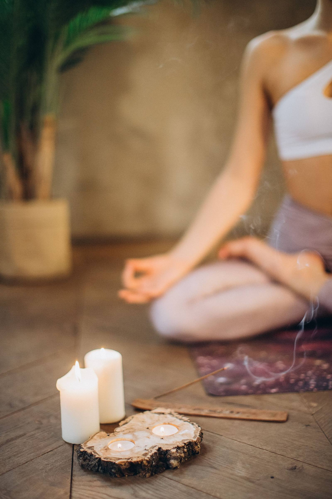
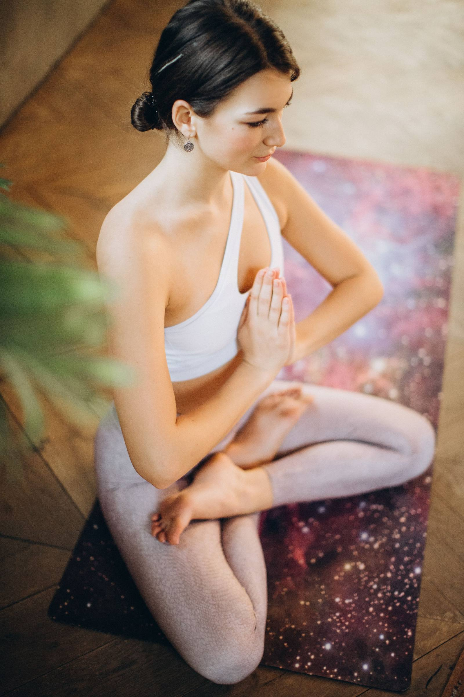

People with a practice
You already step on a mat, and you want a shamanic frame that does not ask you to abandon what you know.

Ember Circle · working title
A short series on breath, simple ritual, and movement that follows the time of year. For people who want depth without signing up to teach.
Who it is for
You already step on a mat, and you want a shamanic frame that does not ask you to abandon what you know.
You guide others and you want time in the seat of a student. This series does not certify you to teach it.
Something is changing — work, city, a relationship — and you want a steady hour that is not another task.
You are curious and a little sceptical. Both are useful. Nothing here requires a belief you do not have.
You would rather know the other faces than disappear into a large hall.
If a session is offered online it will say so. Until then the place is [to confirm].
By the end
A short way in: breath, weight, and one image you can return to without a teacher.
Notice what the body is doing before you decide what it means.
Use a pause, a candle, or a question in proportion to an ordinary Tuesday.
Stay in a circle without performing, and without disappearing.
Four meetings
How you actually enter a room, and a movement practice that starts from the day you had. [date]
Patterns you can use when the mind is loud, taught slowly enough to refuse strain. [date]
Attention, image, and a simple act. What a shamanic approach can mean without costume. [date]
A practice small enough to survive a real week, and a way to close the circle. [date]
Inside the hours



Contribution
[payment plan]. The series runs with [maximum places]. Nothing is charged through this test page.
Ask about a placeWho holds it
A yoga teacher from Sicily, based in Barcelona, working with movement, breath, and a shamanic approach. Her own words are on the home page. This series does not add a co-teacher unless she names one later.
Voices
Written for the layout. Not real students and not real reviews.
“I did not have to become someone more spiritual to be allowed in. The hour was concrete, and that helped.”
“Four meetings was a length I could promise. I left with a practice small enough to keep.”
Questions
No. You need to be able to sit, stand, and lie down in whatever way your body already can, and to say when something should change.
No. The longer immersion, working title Flame Path, is the page for people who want to guide. This circle is for practice.
Not unless Martina later decides there is one. The placeholder is [accreditation, if any].
Only if a session is marked that way. Right now the mode is [to confirm].
The make-up, if any, is [to confirm]. Write before you book if that matters to you.
Say which session you are asking about, and whether you hope to come in person.
Yoga is a physical practice. If your health needs particular care, check with a clinician you trust before you start, and mention injuries when you write. Nothing on this site is medical advice.